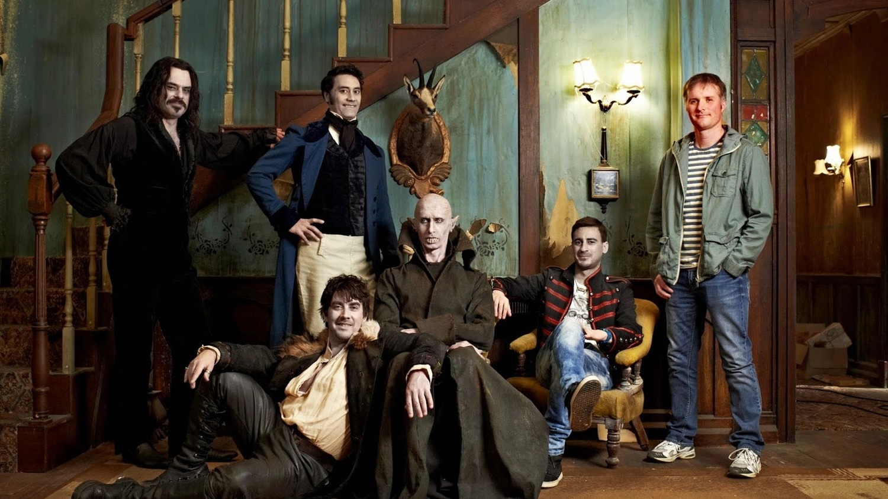
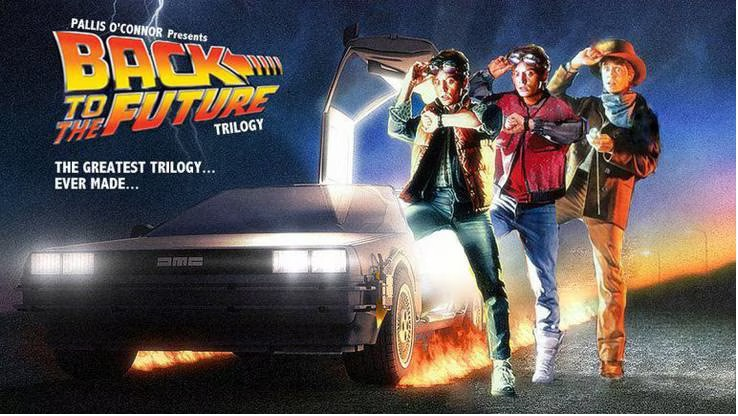
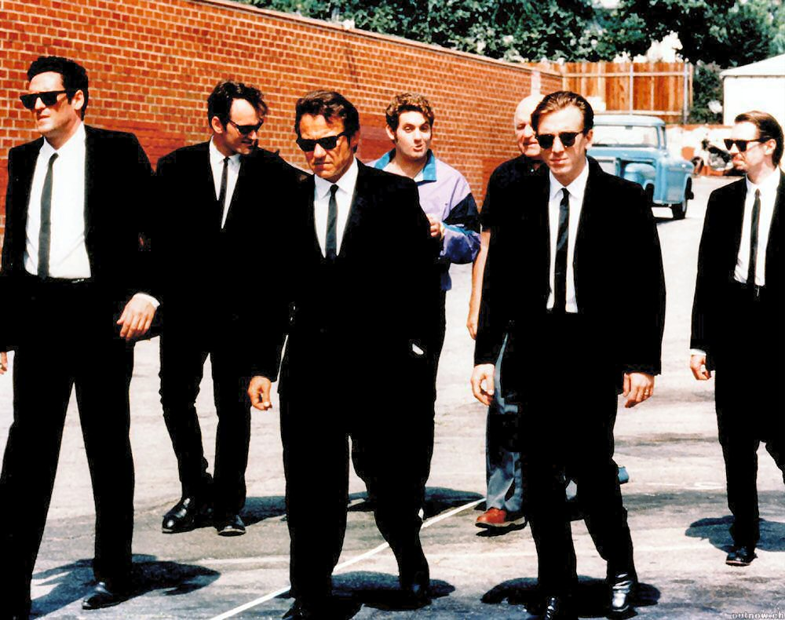
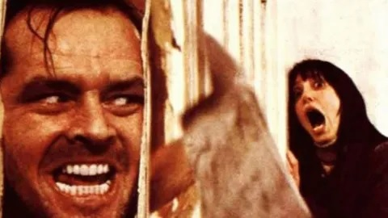

What We Do In The Shadows

"What We Do in the Shadows" es una película de comedia de terror mockumentary (falso documental) escrita y dirigida por Jemaine Clement y Taika Waititi. La película sigue a un grupo de vampiros que viven juntos en una casa en Nueva Zelanda mientras enfrentan los desafíos de la vida moderna.
El filme se desarrolla como un documental que sigue la vida cotidiana de los vampiros: Viago, Deacon, Vladislav y Petyr. Cada uno de ellos tiene su propia personalidad y estilo de vida. Viago es un vampiro de 379 años de edad y es el más organizado y preocupado por las tareas domésticas. Deacon es un vampiro rebelde que se hace el malo pero, en realidad, es bastante inmaduro. Vladislav es un antiguo vampiro que alguna vez fue poderoso y temido, pero ha perdido parte de su antiguo esplendor. Por último, Petyr es un vampiro de 8,000 años que vive en un sótano y apenas interactúa con los demás.
A medida que el documental avanza, los vampiros deben lidiar con desafíos como la búsqueda de sangre, la rivalidad con un grupo de hombres lobo, la adaptación a la tecnología moderna y la convivencia entre ellos. Además, deben enfrentar los problemas románticos y las complicaciones de las relaciones personales. La película combina momentos hilarantes con situaciones sobrenaturales, explorando las luchas y absurdidades de la vida vampírica.
En resumen, "What We Do in the Shadows" es una película cómica que utiliza el formato de falso documental para seguir a un grupo de vampiros mientras lidian con los problemas cotidianos y las dinámicas de convivencia en la vida moderna. Con su humor irónico y su enfoque único del género de vampiros, la película ofrece una perspectiva divertida y refrescante sobre el tema.
Back To The Future

"Back to the Future" es una película de ciencia ficción y aventuras dirigida por Robert Zemeckis. La historia sigue a Marty McFly, un adolescente de los años 80, y su excéntrico amigo científico, el Dr. Emmett "Doc" Brown.
Marty accidentalmente viaja en el tiempo a 1955 en el DeLorean modificado del Dr. Brown, que funciona como una máquina del tiempo. En el pasado, Marty se encuentra con versiones más jóvenes de sus padres y debe asegurarse de que se enamoren para garantizar su propia existencia en el futuro. Sin embargo, su presencia altera los eventos y amenaza con borrar su propia línea de tiempo.
Mientras intenta arreglar las cosas, Marty busca la ayuda del joven Doc Brown, quien inicialmente se muestra escéptico pero luego se convierte en su aliado. Juntos, deben idear un plan para volver a enviar a Marty al futuro y restaurar la línea de tiempo original.
La película combina elementos de comedia, acción y romance mientras Marty lucha por enfrentar los desafíos de estar atrapado en el pasado y encontrar una manera de regresar a su época. A lo largo de la historia, también se exploran temas de amistad, valentía y la importancia de tomar decisiones que pueden cambiar el curso de la vida.
En resumen, "Back to the Future" es una emocionante película de ciencia ficción y aventuras que sigue las peripecias de Marty McFly mientras viaja accidentalmente en el tiempo y trata de reparar los cambios en la línea de tiempo para asegurar su propio futuro. Con su ingeniosa trama y personajes memorables, la película se ha convertido en un clásico del cine y ha capturado la imaginación de audiencias de todas las edades.
Interestelar

"Interestelar" es una película de ciencia ficción dirigida por Christopher Nolan. La historia se desarrolla en un futuro cercano en el que la Tierra se enfrenta a una crisis ambiental que amenaza la supervivencia de la humanidad. En un intento por encontrar un nuevo hogar para la raza humana, un grupo de astronautas emprende un viaje interestelar en busca de planetas habitables.
El protagonista de la historia es Cooper, un exastronauta que se une a una misión espacial dirigida por la NASA en secreto. Cooper y su equipo, incluido el científico Amelia Brand, viajan a través de un agujero de gusano que les permite acceder a sistemas estelares distantes. Su objetivo es explorar estos nuevos mundos y encontrar uno adecuado para la colonización humana.
A medida que el equipo se adentra en el espacio desconocido, deben enfrentar desafíos científicos, físicos y emocionales. El tiempo se convierte en un factor crucial, ya que la dilatación temporal hace que el tiempo pase más rápido en algunos planetas en comparación con la Tierra. Esta diferencia temporal añade una dimensión adicional a la trama y plantea dilemas morales y personales para los personajes.
La película aborda temas como la exploración espacial, la supervivencia, el amor, el destino y las paradojas del tiempo. A medida que la historia se desarrolla, se revelan sorpresas y revelaciones que llevan a un clímax emocionalmente cargado y lleno de intriga.
"Interestelar" combina elementos de ciencia ficción especulativa con una narrativa épica y visualmente impresionante. La película explora la relación entre la humanidad y el universo, y cuestiona los límites del conocimiento y la comprensión humana. Con su mezcla de acción, drama y conceptos científicos, "Interestelar" ofrece una experiencia cinematográfica inmersiva y reflexiva.
Reservoir Dogs

"Reservoir Dogs" es una película de crimen y suspenso escrita y dirigida por Quentin Tarantino. La historia se centra en un grupo de criminales profesionales que se unen para llevar a cabo un robo a mano armada. Sin embargo, las cosas salen mal y la situación se complica cuando se sospecha que hay un infiltrado en el grupo.
La película comienza con el grupo de criminales, que se conocen entre sí solo por apodos como Mr. White, Mr. Orange, Mr. Blonde, etc., reuniéndose en un almacén después del atraco. A medida que la narrativa avanza, se revelan los conflictos entre los personajes y las tensiones aumentan a medida que cada uno se acusa mutuamente de ser el traidor.
A través de una serie de flashbacks, se revelan los antecedentes y las conexiones de los personajes, y se explora cómo llegaron a estar involucrados en el mundo del crimen. La película se caracteriza por diálogos intensos y violentos, así como por su estilo visual distintivo y su uso de la música.
A medida que la trama se desarrolla, se desencadena una serie de eventos violentos y sangrientos, y los personajes se ven obligados a enfrentar las consecuencias de sus acciones. La lealtad, la traición y la moralidad son temas recurrentes en la película, que se explora a través de la dinámica entre los personajes y sus interacciones.
En resumen, "Reservoir Dogs" es un tenso thriller de crimen que sigue las vicisitudes de un grupo de criminales después de un fallido robo. Con su estilo distintivo y su enfoque en la violencia y la moralidad, la película captura la atención del espectador y lo lleva por un camino lleno de giros y sorpresas. La película marcó el debut de Quentin Tarantino como director y se ha convertido en un clásico del cine independiente.
The Shining

"The Shining" es una película de terror psicológico dirigida por Stanley Kubrick, basada en la novela homónima de Stephen King. La historia sigue a Jack Torrance, un escritor y exalcohólico, que se convierte en el cuidador del aislado Hotel Overlook durante el invierno junto con su esposa Wendy y su hijo Danny.
A medida que la familia se instala en el hotel, se revelan las tensiones y problemas subyacentes en su dinámica familiar. Pronto, el hotel comienza a ejercer una influencia siniestra sobre Jack, exacerbando su violencia y su locura latente. Al mismo tiempo, Danny, quien tiene habilidades psíquicas conocidas como "el resplandor", comienza a experimentar visiones aterradoras y perturbadoras dentro del hotel.
El hotel Overlook, con su pasado oscuro y eventos trágicos, se convierte en un personaje central en la película. A medida que el invierno avanza y la familia se ve cada vez más aislada, el hotel desata su poder malévolo sobre Jack, quien se vuelve cada vez más peligroso y violento hacia su esposa e hijo.
"The Shining" es conocida por su atmósfera inquietante, su icónica banda sonora y sus imágenes impactantes. La película explora temas como la locura, el aislamiento, la violencia y la disolución de la familia. El uso magistral de la cinematografía y la dirección de Kubrick contribuyen a una sensación constante de tensión y claustrofobia, creando una experiencia cinematográfica aterradora.
En resumen, "The Shining" es una película de terror psicológico que sigue los desencadenantes de la locura y la violencia de un escritor mientras trabaja como cuidador en un hotel aislado. Con su narrativa inquietante y visualmente impactante, la película se ha convertido en un clásico del género y es considerada una de las mejores películas de terror de todos los tiempos.